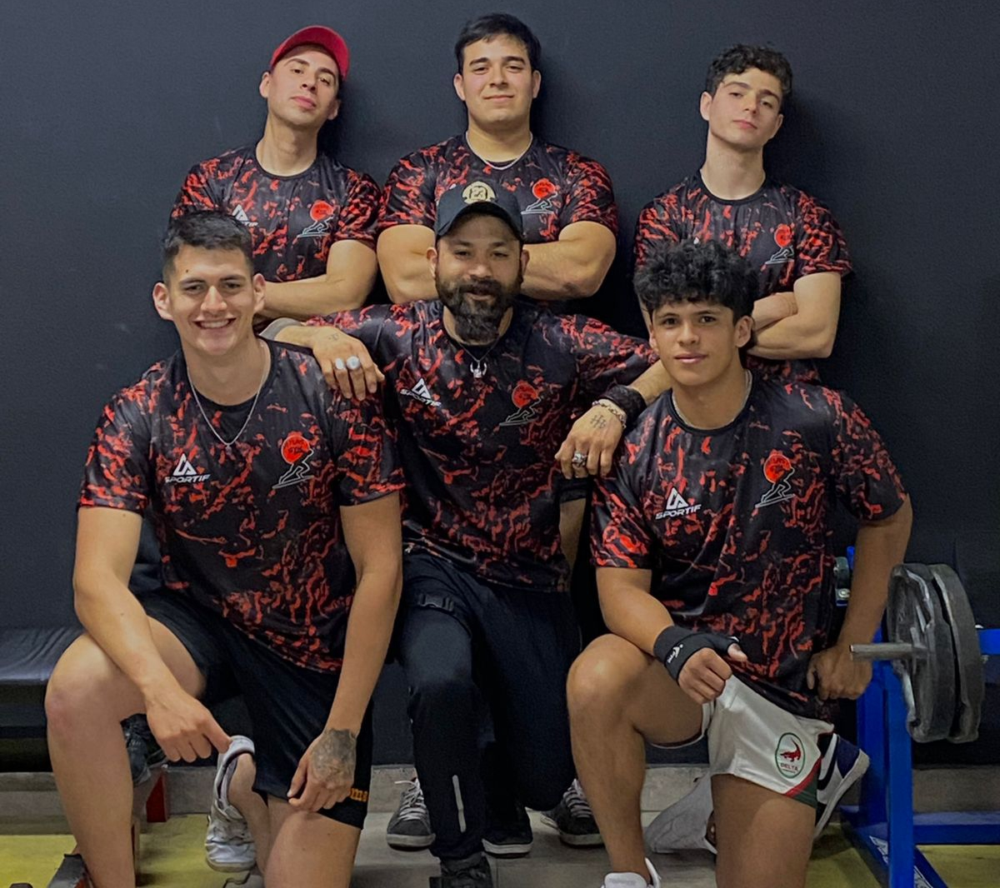
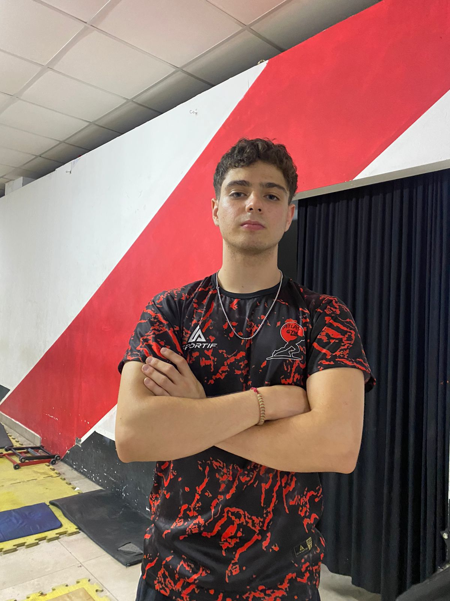
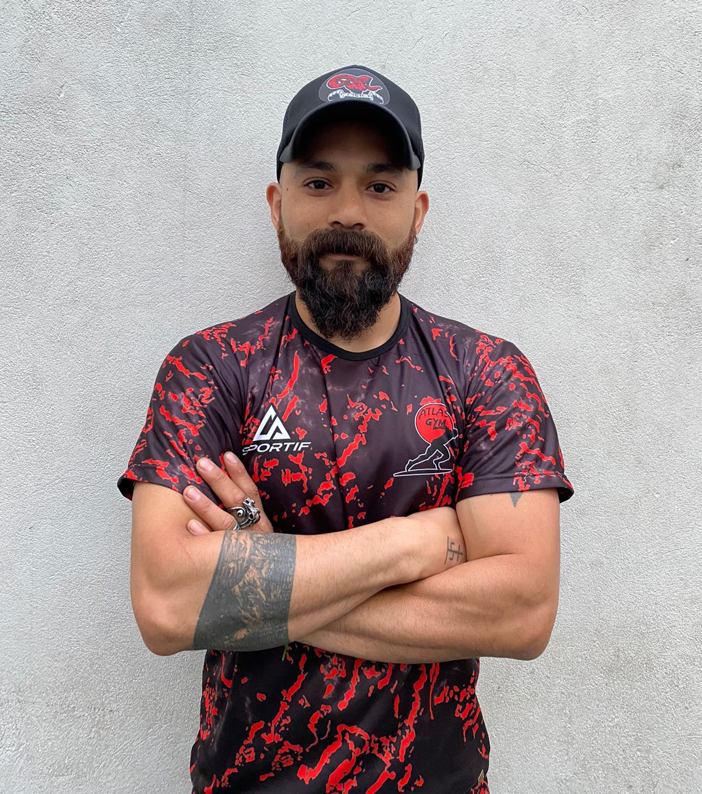
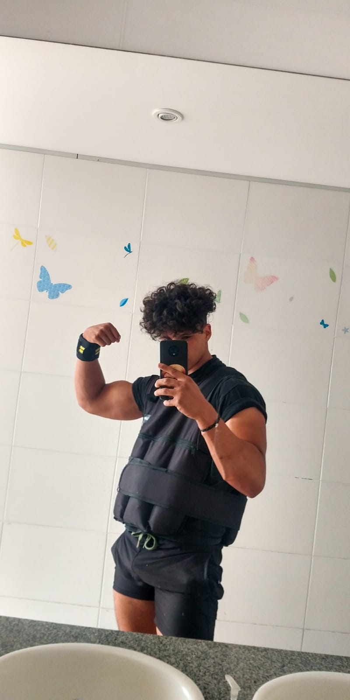
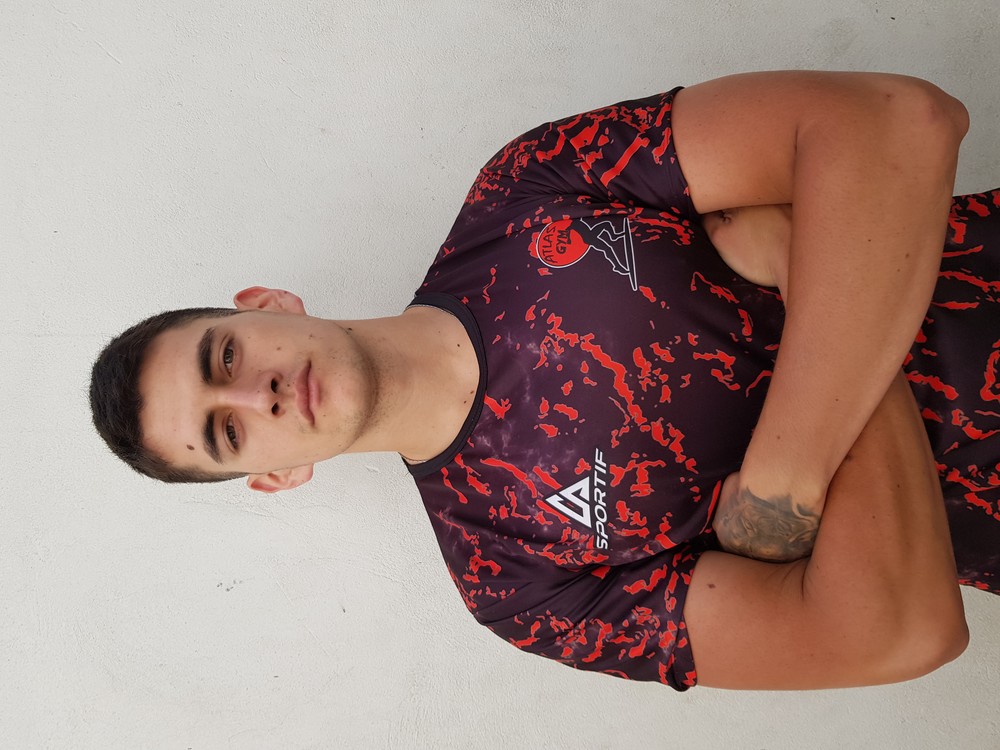

Nuestro Staff
Diego Sauco

Diego es el creador de este proyecto, llamado Atlas Gimnasio, uno de los dos dueños del mismo, y también se desempeña como profesor en la sala de musculación, brindando entrenamientos personalizados. Su gran experiencia y trayectoria le aporta a la institución el profesionalismo, el orden y el horizonte, necesarios para que el gimnasio tenga un rumbo exitoso.
Santiago Pittala

Santiago es el otro dueño de Atlas, quien con su juventud y amor por el entrenamiento y el estilo de vida del fitness, representa un motor fundamental para alcanzar los objetivos propuestos, y brindar una constante innovación en cuanto a los servicios que se deben ofrecer.
Juan Galarraga
Juan es el entrenador más joven del equipo de Atlas, pero no por eso menos experto y profesional. Siguiendo día a día a sus clientes, acompañándolos en todo su proceso, es garantía de buenos resultados.
Gonzalo Ramirez
Gonzalo, otro gran entrenador que forma parte del Staff, le brinda a sus alumnos no sólo un gran entrenamiento, sino también una gran cuota de simpatía y acompañamiento emocional.
Daniel Palacio
Daniel es otro gran valuarte dentro del Staff, quien con sus metodologías variadas se encarga de llevar a sus alumnos a romper límites constantemente. Imposible no mejorar con tal entrenador.
Moris Matias
Matias es la última pieza del Staff de entrenadores, quien busca en sus alumnos que se sientan cómodos entrenando, pero también con el trato que reciban dentro del gimnasio.